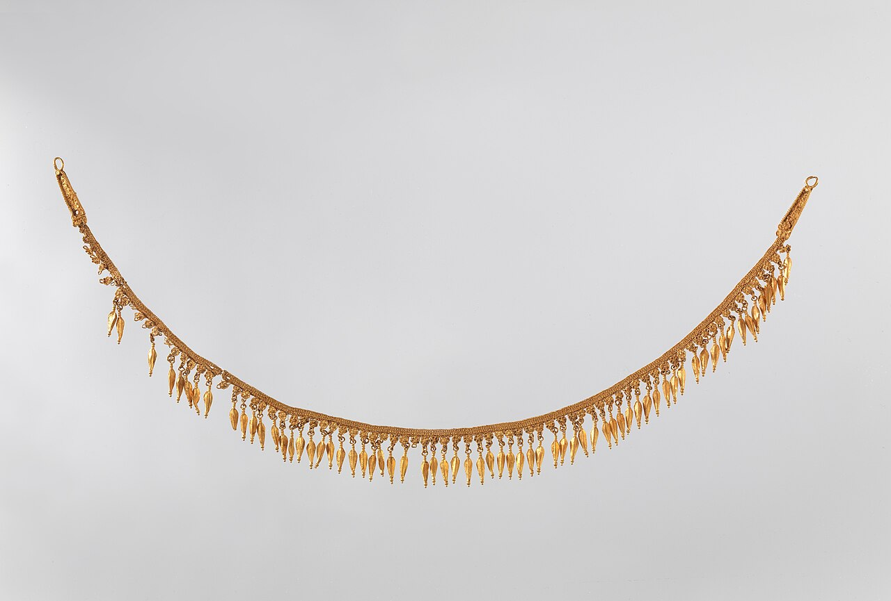
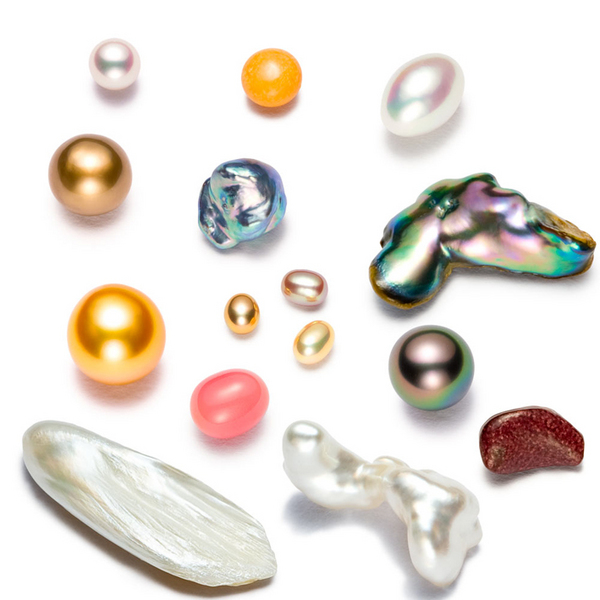
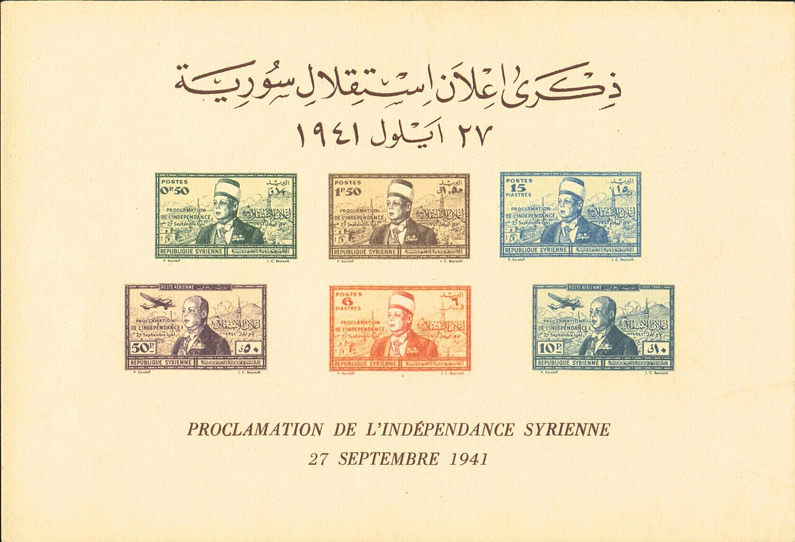
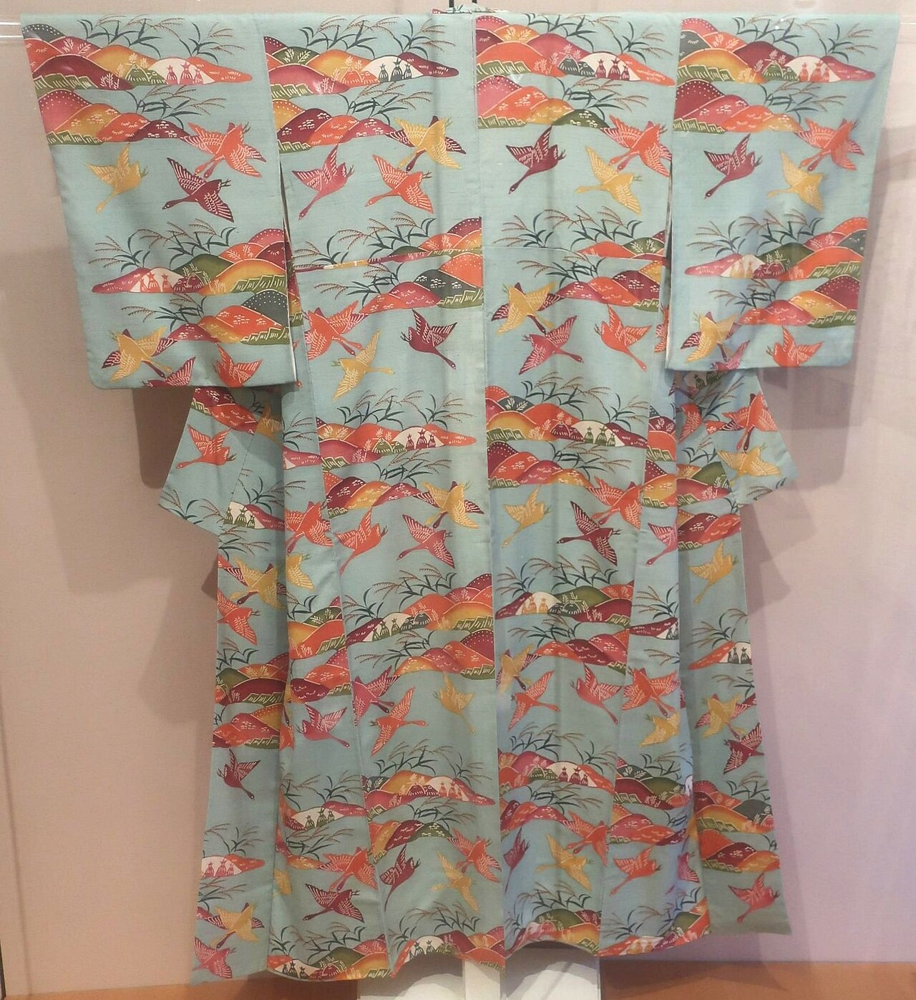
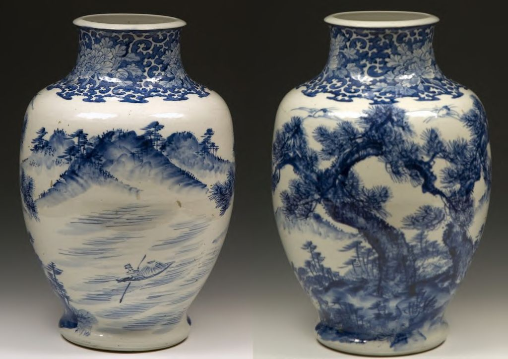
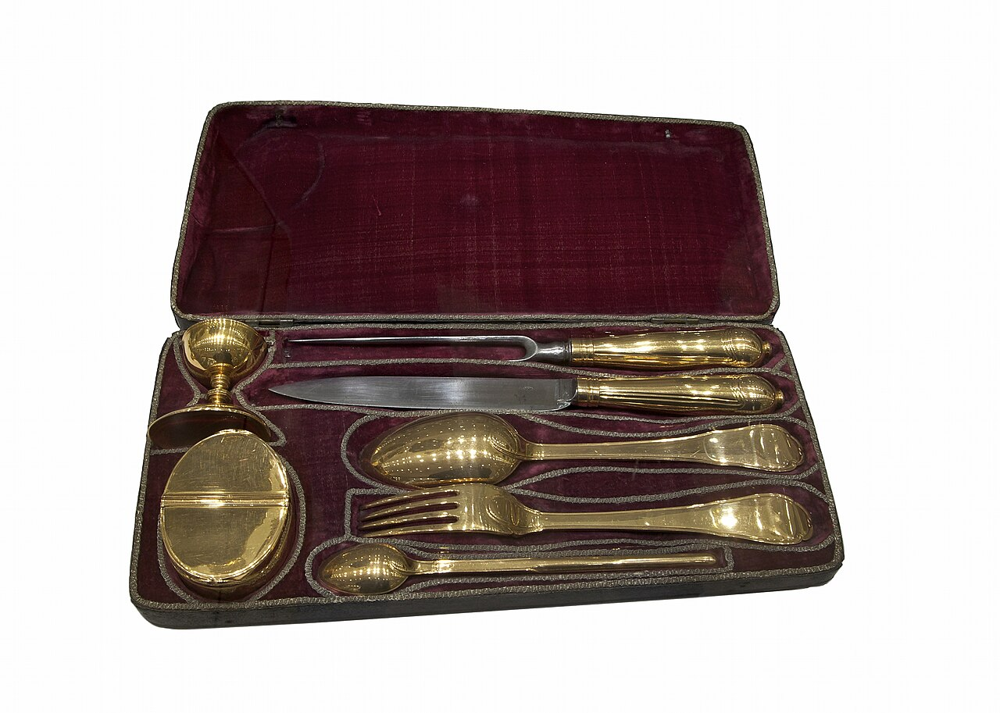
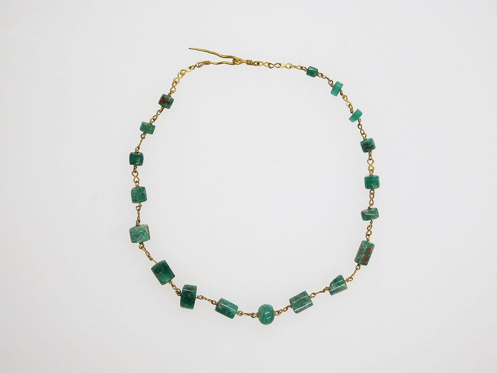
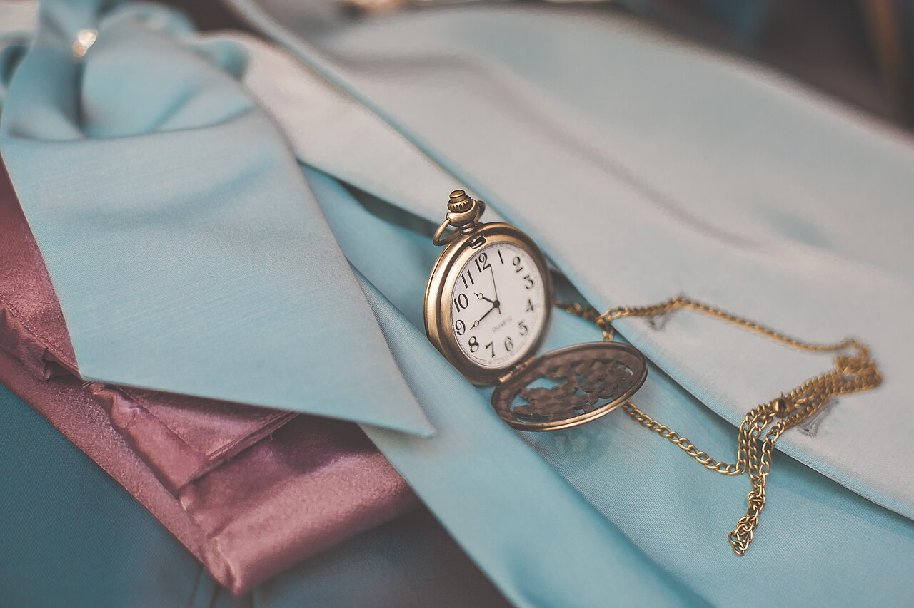
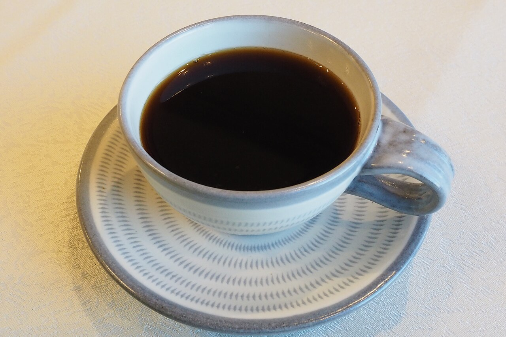

千両箱 二和向台店
047-447-3663- 住所
- 〒274-0805
千葉県船橋市二和東6丁目10-16 JHSビル - アクセス
- 新京成線 二和向台駅から徒歩6分(黄色い看板が目印)
- 駐車場
- 無料の専用駐車場あり(アットパークマルエツ二和向台 立体駐車場2階・1番車室)。荷物が多い場合はスタッフがお持ちします。
- 営業時間
- 10:00〜19:00 / 毎週火曜定休
FEATURES
バッグ・時計・貴金属から、お酒、切手、ホビー用品まで。品目の幅広さが自慢です。
他社で値が付かない品も、まずはお持ちください。意外な品に値が付くこともあります。
店頭、出張、LINE査定、宅配。ご都合に合わせてお選びいただけます。
品数が多い、時間がない、そんなときも。出張買取で一緒にお片付けします。

ABOUT
経験豊富な鑑定士が、お品物を目の前で査定し、結果を分かりやすくご説明します。買取がよく分からない方でも、安心してご利用いただけるよう心がけています。
千両箱は、日常にあふれる「不要な物」を次の人へつなぐリサイクル事業を目指しています。
ITEMS










記載にないものでも、需要があれば査定いたします。まずはお問い合わせください。写真はイメージです。
WAYS TO SELL
お店にお持ちください。その場で査定し、ご納得いただければ現金でお支払いします。
ご自宅・社宅・会社オフィスなどへお伺いします。品数が多い方に。
写真を送って気軽に概算を確認。(LINE公式アカウントのご案内は準備中)
遠方の方も、お品物を送って査定を受けられます。
SHOPS